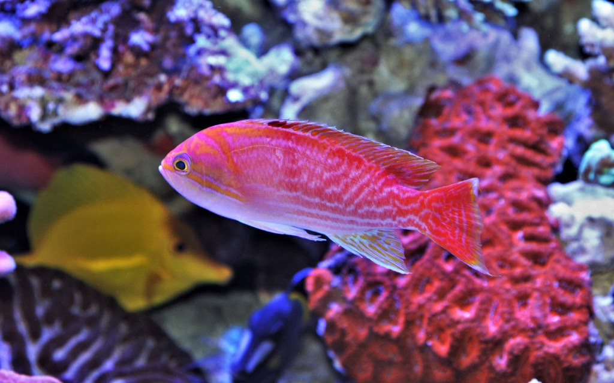

1st may, 2021
HISTORY OF KARACHI ZOO
Karachi Zoo opened its doors to the public in 1878 and was named the ‘Mahatma Gandhi Garden’ in 1913. Interestingly, according to historians, the site where the zoo is presently located used to house a factory belonging to the East India
Company back in 1833. Following the independence of Pakistan in 1947, the name of Gandhi Garden Karachi was officially changed to Karachi Zoological Gardens, more commonly referred to as Karachi Zoo.
In 1952, an aquarium by the name of ‘Machli Ghar’ was established inside the zoo. A year later, Karachi Metropolitan Corporation (KMC) introduced the positions of a zoo curator and a veterinary doctor to ensure the animals remained healthy
and disease-free. In 1991, the city government took on the remodelling of the Natural History Museum located inside the Karachi Zoo, which was inaugurated by the Japanese Princess in 1992. The Reptile House inside this zoo in Karachi
was also extended and renovated in the same year.

1st may, 2021
ANIMALS
Animals are obviously the biggest attraction of any zoo. This zoo in Karachi is home to more than 800 animals, including 80 different species of mammals, 460 birds and more than 200 reptiles. Some of the most prominent animals in Karachi
Zoo include two female African bush elephants named ‘Noor Jahan’ and ‘Madhu Bala,’ white Lions purchased in 2012, along with a male Asian black bear and a female Syrian brown bear purchased in 2017. Some of the other animals inside
the zoo include lions, Bengal tigers, jackals, spotted hyenas, Arabian Oryx, Bactrian camel, deer, giraffe, zebras, llamas, and baboons, to name a few.
In a recent interview, Administrator Karachi Barrister Murtaza Wahab announced that new enclosures are being constructed for the wildlife at the zoo. Visitors can also expect to see new animals during their next trip. It is also worth
mentioning the new habitats will be built as per international standards to provide the animals with a healthy and natural space. In addition, the Government of Sindh is also working alongside local authorities to ensure the timely
completion of the project.

1st may, 2021
MUGHAL GARDEN
Even if you aren’t a huge fan of animals, you can still visit the Karachi Zoo to explore the beautifully-landscaped and well-manicured Mughal Garden. It dates back to 1970.
These lush green lawns with stunning flowerbeds, beautiful fountains and an elegant Baradari are reminiscent of the Mughal-era gardens found in Lahore. As per the map of Karachi Zoo, they occupy a major part of the Zoological Gardens and
usually serve as the venue for seasonal flower shows.

1st may, 2021
KARACHI MUNICIPAL AQUARIUM
Established in 1953, the Karachi Municipal Aquarium is also a prominent attraction for visitors. It is one of the three public aquariums in Karachi and features 28 display tanks with more than 300 fish belonging to 30 different species.
If you or your kids have an interest in marine life, you simply cannot miss out on visiting this aquarium at the Karachi Zoo.